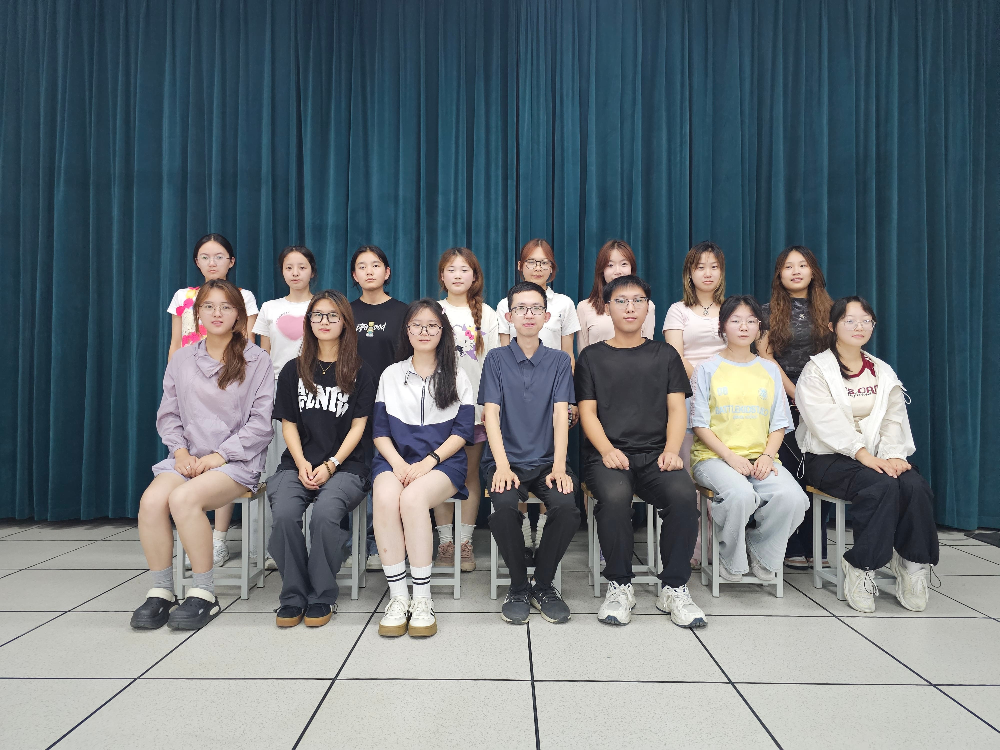
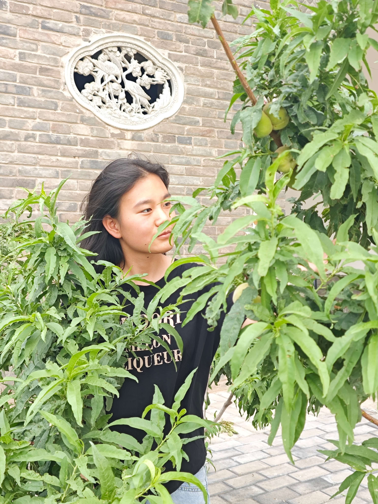
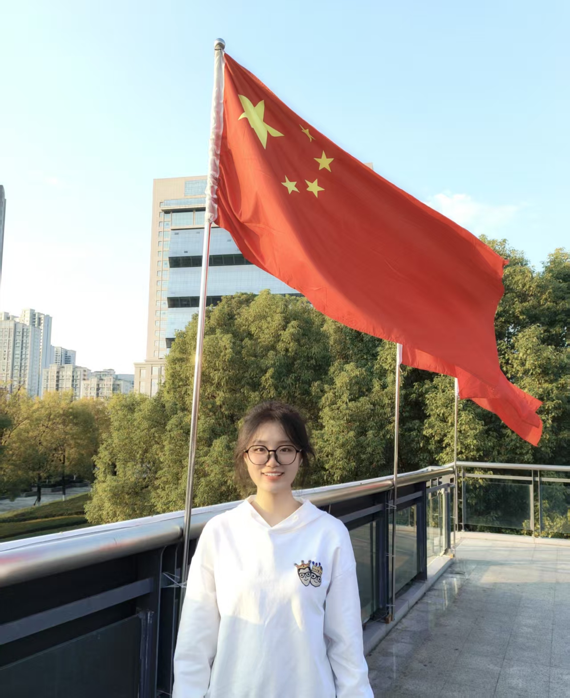
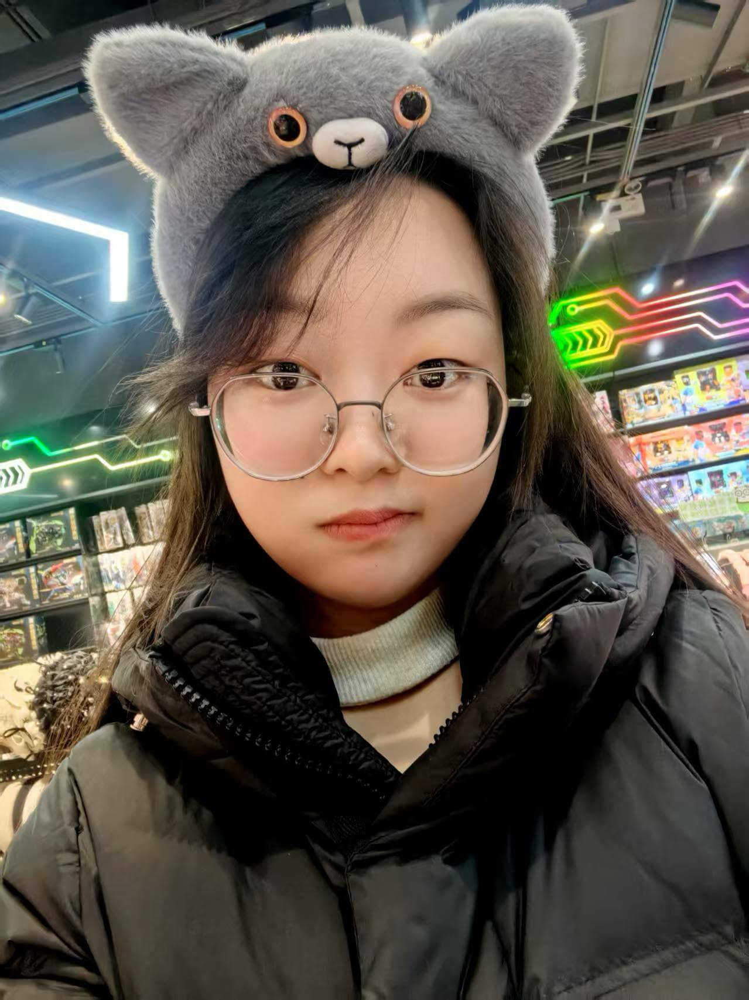

SAMPSON科研实验组
科研实验组聚焦MicroRNA与神经系统疾病、中药、生物信息学、动物模型等领域。实验组致力于交叉融合研究，推动本地区医学科研发展。
导师介绍
主要导师
刘春阳
医学院实验中心副主任，研究方向为 MicroRNA在缺氧缺血性脑病（HIE）中的调控机制，聚焦离子通道、信号通路与神经系统疾病的分子基础。
合作导师
谢娟平 教授
院长，研究方向为 中药提取与疾病动物模型研究，在药食同源方向有深入探索，主持多项国家级与省部级中药相关项目。
徐辉 教授
院长，博士研究生导师、博士后。
成员介绍

刘春阳
总组长

于子芮
总秘书长

张琳
总副组长

丁乐乐
总副组长

张愉茸
总副组长

刘文龙
总副组长

李凯乐
组长

白若暄
秘书长
实验组成员风采展示



2025上半年年度荣誉展示
刘文龙
科技创新先进个人
金苑宁
科研实验安全稳定先进个人

王雪华
学术研究先进个人

张愉茸
卓越贡献奖
李璐
突出贡献奖
李凯乐
最佳进步奖

李玥翮
最佳创新奖
赵粤霞
实验组先进个人
杨艳淇
实验组安全稳定先进个人
表彰奖励
| 姓名 | 获奖情况 |
|---|---|
| 丁乐乐 | 2025届优秀毕业生 |
| 蔡修燕 | 2025届优秀毕业生 |
研究方向
- MicroRNA 与神经系统疾病分子机制研究
- 医学生物信息学
- 血液蛋白脂类相关研究
- 中药相关研究
- 疾病动物模型相关研究
生物信息学
本研究方向聚焦于数据挖掘、基因组分析、miRNA作用机制等...


MicroRNA分子机制研究
重点探索miRNA在缺氧缺血性脑病（HIE）中的调控机制，涉及信号通路、离子通道与蛋白质表达的调节作用。
成果展示
包括科研项目、论文发表、专利、获奖项目等成果


学生竞赛获奖情况
| 姓名 | 项目名称 | 比赛名称 | 奖项等级 | 年份 |
|---|---|---|---|---|
| 于子芮 | miRNA-210, miRNA-373与新⽣⼉缺氧缺⾎性脑病相关性研究 | 大学生创新训练计划项目 | 国家级 | 2018 |
| 张琳 | miRNA-377通过调控CBS/H2S在HIE中的作用机制研究 | 大学生创新训练计划项目 | 省级 | 2019 |
| 韩语纯 | 胎鼠缺氧缺血性脑损伤microRNA-210与电压门控钠离子通道SCN1B相关性研究 | 大学生创新训练计划项目 | 校级 | 2020 |
| 李妙静 | 亚洲人参，葛富乡村 | 第五届陕西省大学生天然药物微视频大赛暨科技创新成果大赛 | 省级优秀奖 | 2024 |
| 张愉茸 | 多模态自适应护理体温环（MATC- Ring） | 第十一届全国青年科普创新实验暨作品大赛 | 省级三等奖 | 2025 |
| 李玥翮 | 粉碎过滤承重一体机：实验室的全能助手 | 第十一届全国青年科普创新实验暨作品大赛 | 省级三等奖 | 2025 |
| 刘文龙 | “艾”芯秦脉国内首款植物抑菌智能缓释穿戴装置革新者 | 第十一届全国青年科普创新实验暨作品大赛 | 省级三等奖 | 2025 |
| 刘文龙 | 秦岭艾草黄酮的提取工艺优化与抗菌产品开发研究 | 大学生创新训练计划项目 | 省级立项 | 2025 |
学生奖学金获奖情况
| 姓名 | 获奖项目 | 奖项等级 |
|---|---|---|
| 计娜 | 国家奖学金 | 国家级 |
| 丁乐乐 | 国家励志奖学金 | 国家级 |
| 张愉茸 | 国家励志奖学金 | 国家级 |
| 赵倩 | 国家励志奖学金 | 国家级 |
| 杨艳淇 | 安康学院奖学金 | 校级 |
考研与考博成果
SAMPSON科研实验组注重学生科研能力与学术发展的同步提升，近年来在考研与考博方面取得了显著成果。
| 姓名 | 录取单位 | 录取类型 |
|---|---|---|
| 于子芮 | 复旦大学 | 博士研究生 |
| Hisham Al‑Ward | 同济大学 | 博士研究生 |
| Francine Ngaffo Mekontso | 海南大学 | 博士研究生 |
| 张琳 | 哈尔滨医科大学 | 硕士研究生 |
| 韩语纯 | 哈尔滨医科大学 | 硕士研究生 |
| 孙玮 | 吉林大学 | 硕士研究生 |
| 计娜 | 桂林医科大学 | 硕士研究生 |
| 师可馨 | 河南中医药大学 | 硕士研究生 |
| 蔡修燕 | 陕西中医药大学 | 硕士研究生 |
学术论文
| 序号 | 题目 | 论文级别 | 发表时间 | 发表期刊 | 期刊所属国家 |
|---|---|---|---|---|---|
| 1 | MicroRNA与缺血性脑损伤机制研究 | SCI二区 | 2024年5月 | Neuroscience Letters | 美国 |
| 2 | 基于动物模型的中药抗炎机制探讨 | 中文核心 | 2023年11月 | 中草药 | 中国 |
就业单位
| 姓名 | 就业单位 | 职业 |
|---|---|---|
| 张海娟 | 陕西省结核病防治院 | 护士 |
| 张琳 | 哈尔滨医科大学附属第二医院 | 医生 |
| 纪洪兵 | 北京市房山区第一医院 | 医生 |
| 赵倩 | 西安交通大学第二附属医院 | 护士 |
| Francine Ngaffo Mekontso | Cameroon Beverage Company | Research and development engineer |
| 吝佳敏 | 西安国际医学中心 | 护士 |
| 李易晓 | 深圳市第二人民医院（深圳大学第一附属医院 | 医生 |
网站维护负责人：刘文龙 联系电话：15596827232